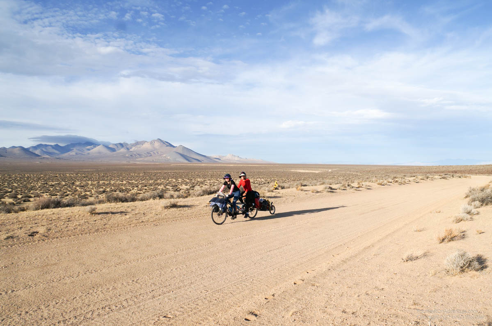
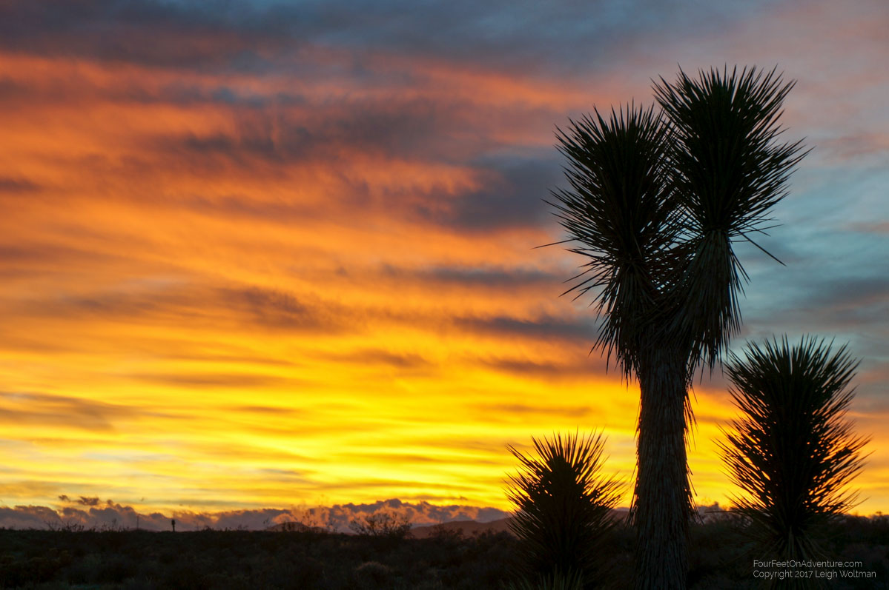
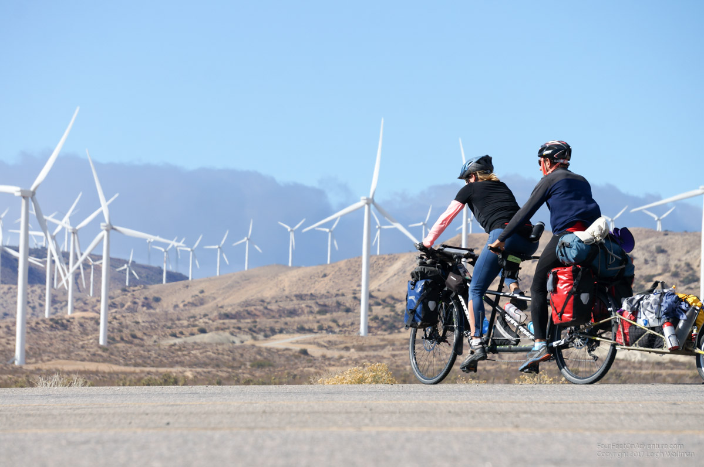
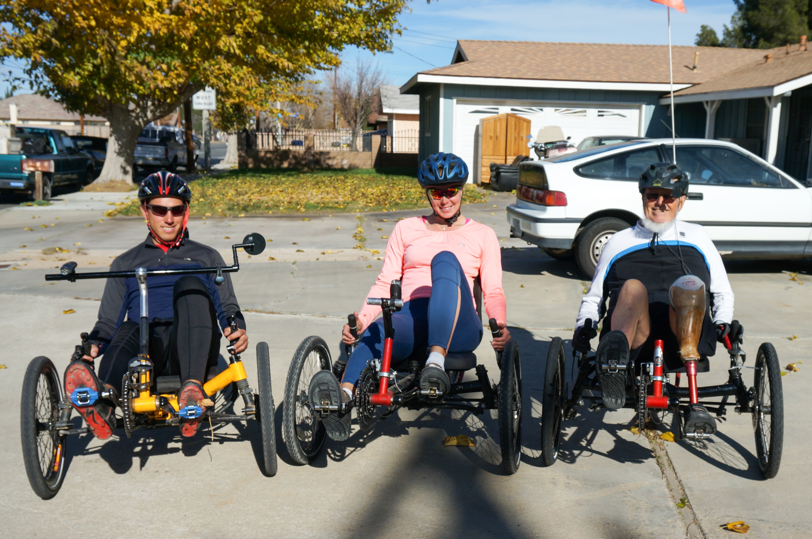

Email Us
Please send us an email, we would love to hear from you!

The last update left off in Ridgecrest where we stopped for an afternoon and night to refresh some supplies. As we were entering the town where the air force planes originate, a B-2 stealth bomber (flying wing) passed slowly overhead accompanied by a fighter jet. In Ridgecrest we happened to notice the regional Bureau of Land Management (BLM) office. This is a federal department that manages national lands, of which there are a fair amount in the states we have been through. I’m not sure how it works between ownership of state land and federal land but it seems unclaimed land is managed by the BLM. They generally support recreational uses of the land which makes it prime camping opportunity for us. We can generally camp without worry that we are encroaching on anybodies property rights. The recreation they generally support given it is America is off-road vehicles, however, those dirt roads are good for our bike! At this office we were able to procure free maps for the areas in the next 200 kilometers. This helped us plan a route on generally quiet roads and also plan places to camp.

We generally took a gravel road out of Ridgecrest. Riding without cars was nice, we were only passed by two dirt motorcycles who waved. Later when we stopped for a break, there was a trailer camped out off the road and one of the dirt bikers rode over to talk to us. He was surprised to see us and said he’d never seen a bicycle out there before. After a little bit of riding we entered California’s Red Rock Canyon State Park (probably our third park with that name). No camping was allowed there so we turned around and walked the bike out into the desert where we made camp behind a little hill.

The next day we rode into the proper campground at the state park, looked at their visitor centre and filled up with water. We continued towards the town of California City where we found some WiFi at the local library and did some recon on campgrounds to spend the night. We are definitely entering the populated part of California so public lands for free camping are starting to diminish in presence. We pedaled to an RV park that would let us camp for the night.
The next morning we had a stiff 35 mph wind blowing. Our most direct route was along the freeway but the cross wind just seemed to make it too dangerous. We would have to take the long way around which would take us straight into the wind for several kilometers before turning to hopefully give us a downwind run. We passed through the town of Mojave. We had huge solar energy farms and the most massive wind farm along our route.

Eventually we made it towards Lancaster where we hoped to stay with a WarmShowers host. We had contacted three and got positive responses from them all so figured we would make one work. We took the one closest to a Walmart we had ordered some dried food into. We stopped at the Walmart and I went in to pick up my order. Unfortunately, it is getting close to Christmas so the store was a zoo. After 45 minutes of waiting I found they couldn't find my order so I went to do some more shopping. I checked again, and decided just to cancel the order. After over one hour I emerged with 6 items to Annette’s amazement as we were both expecting a quick stop.
We found our hosts and they served us a nice lasagna dinner which was unexpected and very nice. We had a long conversation and then retired to bed. The next morning we packed up and headed to Starbucks to get some digital errands done. I needed to renew my health insurance, and there was many other things here. Starbucks has our best WiFi down here because they partnered with Google who I assume gives them a fibre connection. We set up with another couple for another WarmShower night in this town a little further in the direction of our departure. This couple was in their 80’s and were very enthusiastic about having us. They both ride recumbent (sitting down) three-wheeled bicycles and had several so we were encouraged to go for a ride with the husband. He had no feet and neither one leg after a small plane crash where he lost his first wife. He was very happy that we visited and biked beside us for a kilometer or two on our way out of town.

We climbed our last major crest which peaked at just over 1000 metres, according to our intended route it would be all downhill (or flat) to the ocean over 150 kilometers away! We passed through a national forest which we thought about camping in but all the campgrounds had been closed. We decided to push on to a state campground beyond the next town. The town of Santa Clarita was heavy traffic, as we are starting to enter Los Angeles. We had to bike on 8 lane roads and eventually got on the ‘old road’ which ran beside the extremely busy freeway. We found the campsite and spent the night.
At our next morning we booked our AirBnb campsite in Camarillo. This was the only camping option we could find that was close to a train station for Annette to head to San Diego to renew her visa, and close to a grocery store so I could bike to pick up food while she was gone. We headed down, and then decided to head to Camarillo all in one day. The shortest route involved a steep climb, when looking at the elevation profile we both assumed the ‘spike’ was just a data error. However, when we climbed the pass, we climbed the steepest road of our trip. Fortunately it was only a 300 metre climb in elevation but we could only go for about 60 seconds before the weight of the loaded bike was just too much. I used the level on the camera to measure the road grade, an astounding 18% which explained our heart rates.
We ended up camping in the backyard of a pair of high school teachers. It was a little expensive for what it was but worked out well. I spent a couple days in town while Annette took the train.
We are now loading up on supplies before heading to the coast. It should be a short 30 kilometer ride and even slightly downhill as we are still 100 metres above the ocean. We've passed out of the desert now, except for the water, the desert was great to us, lots of camping options, and beautiful wide open views. The best thing was having cool temperatures but waking up to a perfectly dry tent. Now, we are close enough to the coast to have dew again.
Please send us an email, we would love to hear from you!